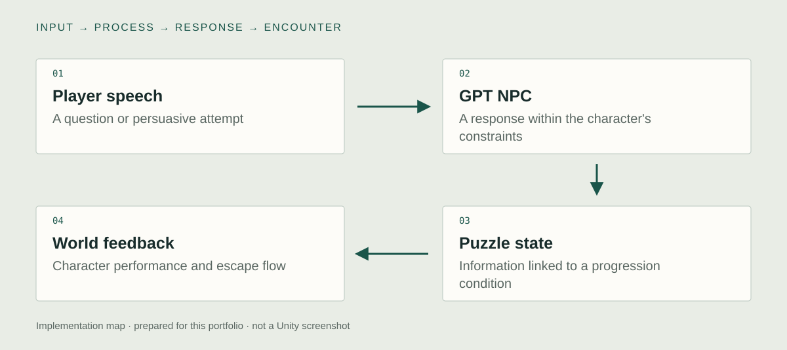

Unity implementation
GPT-based NPC dialogue
I integrated a GPT-based NPC into the Unity VR game. Players try to obtain a protected password or useful clue through conversation. The language interaction therefore has an explicit gameplay purpose: information from the encounter can help the player satisfy an escape condition.

Puzzle progression
I connected the dialogue encounter to puzzle and progression conditions. A reply is one part of a larger game loop that also includes the player's actions and the world's response. The original progression condition still needs a focused source capture. The independent code example below demonstrates a separate, inspectable approach to authorizing progression.
VR escape-game structure
I built the VR experience around the tension between a character's constraints and the player's attempts to work around them. The premise is a fictional escape-game mechanic. Escape Metro and RedFlight AI are two names for this same project, rather than separate AI systems or model-security studies.
System & design decisions

- 01Player speech
A question or persuasive attempt
- 02GPT NPC
A response within the character's constraints
- 03Puzzle state
Information linked to a progression condition
- 04World feedback
Character performance and escape flow
A conversation with a consequence
The AI dialogue is part of a puzzle rather than an ambient addition. Its relationship to the password and progression gives interaction a concrete purpose.
A model response and a game rule
The original integration links conversation to gameplay. The independent example below demonstrates a stricter separation between presentation cues and game-authorized progression without claiming it reproduces the private source.
An experimental game premise
Jailbreaking is the artistic and gameplay concept in this controlled fiction. It is not a claim that the project trained a model or evaluated the security of a deployed service.
Verification and reuse notes
These are newly prepared checks, not reported production incidents.
- Design decision
- Give dialogue a task consequence. The original work connects GPT conversation to progression. The independent source further separates reply presentation from the rule that authorizes an unlock.
- Failure case to exercise
- In the independent example, return a reply from an earlier turn, reset before a reply arrives, and attempt an unlock without puzzle evidence. These are source-defined checks with Unity execution pending.
- Observable evidence
- Record reply identifiers and three outcomes: an outdated reply is rejected, a valid reply is presented, and progression changes only when its own conditions are met. Show the corresponding source revision.
- Reuse boundary
- NpcProgressGate illustrates turn/epoch validation and explicit progression rules. It includes no speech service, model API, original NPC prompts, or complete escape game.
Code example
A reply validator and puzzle gate keep NPC text separate from game-authorized progression.
NpcProgressGate.cs
public bool EnterCode(string input)
{
if (unlocked || !evidenceFound || !string.Equals(input, puzzleCode, StringComparison.Ordinal)) return false;
unlocked = true; onUnlocked.Invoke(); return true;
}Implementation notes
- AcceptReply checks turn identity, epoch, timeout, text length, and an allowed presentation cue.
- EnterCode authorizes progression from puzzle evidence and the expected code. A model reply does not directly invoke the unlock event.
- ResetPuzzle advances the epoch and clears pending state so a reply from the previous puzzle cannot be accepted.
Concept
What happens when negotiating with an AI's rules becomes the rule of a game?
The subway is both a spatial environment and a setting for a language-based constraint. A player does not progress only by finding an object or following a dialogue tree. They experiment with how to address the NPC, turning the tension between instruction and persuasion into a playable situation.
Development
Retrospective planning notes, prepared for this portfolio.
Write the constraint
Define what the guard knows, what it should protect, and why the player needs that information.
Build the conversational objective
Connect the exchange to a password, clue, and escape condition that can be inspected in the game.
Keep the exchange in the world
Coordinate the NPC's response and presentation with the player's ongoing VR task.
Further research
How do players understand and negotiate a conversational constraint when it determines game progression?
Vary: The way the NPC explains or withholds its rule.
Hold consistent: Puzzle goal, protected information, world, and response presentation.
Proposed comparison. No controlled study or measured effect is reported.